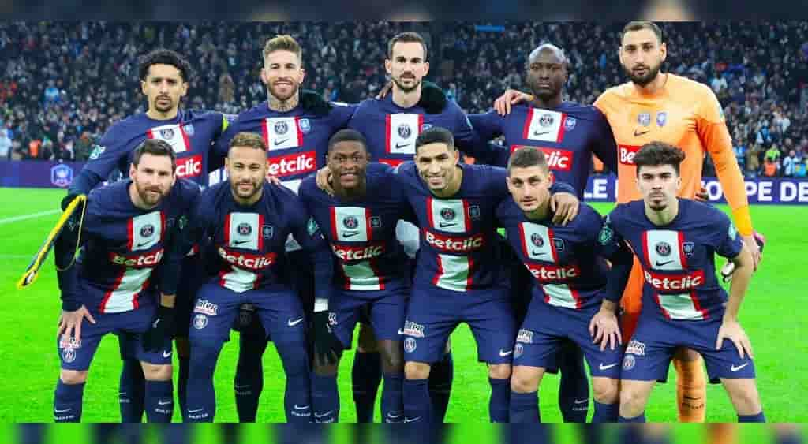

Перша особиста сторінка

Короткі відомості
| Ім'я та Прізвище: | Богонос Даниїл |
| Статус: | Студент 2 курсу Е-25-1/9 |
| Місто: | Кам'янське |
| Улюблена тема: | Мій пес Барсик |
Автобіографія
Привіт! Це моя перша веб-сторінка, яку я зробив під час вивчення базових тегів HTML та CSS. Я навчаюся в коледжі та роблю перші кроки у веб-розробці.
У вільний від навчання час я дуже люблю дивитись останні матчі улюбленної французької футбольної команди ПСЖ. Саме тому я вирішив додати сюди трохи інформації про це.
Мої захоплення та навички
- Вивчення HTML, CSS та роботи з Git
- Комп'ютерні ігри та технології
- Заняття спортом
- Прогулянки з собакою
Контактна інформація
- Email: danyilbohonos@college.udhtu.edu.ua
- GitHub: Моя сторінка GitHub